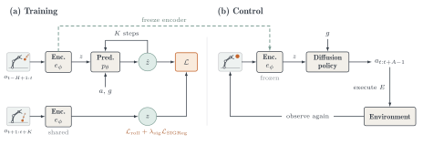

A forecaster graded only on tomorrow can keep sloppy notes that drop slow-moving details. Graded on the whole week, small slips compound, so they must write down every variable that drives the weather. SG-JEPA grades its world model on its own five-step forecast, and the lesson lands mostly in what the encoder writes down, not in the forecasting rules.
내일 예보만으로 평가받는 예보관은 천천히 변하는 요소를 빼먹은 허술한 노트로도 버틸 수 있다. 일주일 전체로 평가받으면 작은 실수가 쌓이므로 날씨를 움직이는 변수를 빠짐없이 적어야 한다. SG-JEPA는 월드 모델을 자기 자신의 5단계 예보로 채점하고, 그 교훈은 예보 규칙보다 주로 인코더가 무엇을 적어 두는지에 남는다.
The paper in one figure한 장으로 보는 논문
Two changes to LeWorldModel: gravity enters as an action, and training scores multi-step rollouts. The frozen encoder then serves a diffusion policy for control.
LeWorldModel에 두 가지를 바꾼다: 중력을 행동으로 넣고, 학습은 다단계 롤아웃을 채점한다. 이후 고정한 인코더 위에 확산 정책을 올려 제어한다.

- Encode a 20-frame history.20프레임 기록을 인코딩한다.A ViT-Tiny maps each frame to a 256-d latent; gravity g joins the action as one normalized scalar.ViT-Tiny가 각 프레임을 256차원 잠재로 바꾸고, 중력 g는 정규화한 스칼라 하나로 행동에 붙는다.
- Roll out 5 steps on its own predictions.자기 예측으로 5단계를 굴린다.A GRU or Mamba-style SSM predictor feeds each guess back in; later steps weigh less (γ = 0.95).GRU 또는 Mamba식 SSM(상태공간 모델) 예측기가 매 예측을 다시 입력으로 넣고, 뒤 단계일수록 가중치가 작다(γ = 0.95).
- Test far from the training gravity.학습 중력에서 멀리 떨어져 시험한다.Train near g = 4 (2D) or 9.8 (3D); probe 44-step rollouts over 25 test gravities, then train control policies.g = 4(2D) 또는 9.8(3D) 근처에서 학습하고, 시험 중력 25개에서 44단계 롤아웃을 탐침한 뒤 제어 정책을 학습한다.
The payoff comes late in the rollout이득은 롤아웃 후반에 나온다
On squares SG-JEPA halves 44-step error; on triangles DINO-WM wins early but loses by step 44. That pattern points to less error compounding, not a better one-step fit.
사각형에서 SG-JEPA는 44단계 오차를 절반으로 줄이고, 삼각형에서는 DINO-WM이 초반엔 앞서다 44단계에서 뒤진다. 한 단계 정확도보다 오차 누적이 줄었다는 신호다.
Control and 3D prediction제어와 3D 예측
The same frozen features make better robot policies on all three tasks. The biggest jump is catching a bouncing ball.
같은 고정 특징이 세 과제 모두에서 더 나은 로봇 정책을 만든다. 가장 큰 향상은 튀는 공 잡기다.
Position is a clear win; velocity is not. On 3D projectile flight DINO-WM keeps the lowest 44-step velocity error.
위치는 확실히 이기지만 속도는 아니다. 3D 포물선 비행에서 44단계 속도 오차는 DINO-WM이 가장 낮다.
| Model모델 | Pos. mean (m) | Pos. h44 | Vel. mean (m/s) | Vel. h44 |
|---|---|---|---|---|
| Original LeWM | 0.0986 | 0.1229 | 1.1361 | 1.1400 |
| DINO-WM | 0.0705 | 0.1152 | 0.5672 | 0.7411 |
| SG-JEPA (SSM) | 0.0495 | 0.0785 | 0.5664 | 0.8861 |
| SG-JEPA (GRU) | 0.0491 | 0.0764 | 0.5391 | 0.7829 |
Where the advantage comes from이득은 어디서 오나
The gain lives in the encoder, and rollout amplifies it. The one-step gap stays under 0.06; the free-rollout gap peaks near 0.38.
이득은 인코더에 있고, 롤아웃이 그것을 키운다. 한 단계 격차는 0.06 미만인데 자유 롤아웃 격차는 0.38 근처까지 커진다.
![Three line plots. (a) Mean rollout error versus gravity for four encoder and fresh-predictor pairings: GRU-trained encoders (blue) sit below Transformer-trained encoders (orange) whichever fresh predictor is used. (b) Teacher-forced one-step error versus gravity: the SG-JEPA encoder curve lies below the DINO encoder curve everywhere, with the gap widening at extreme gravities. (c) DINO minus SG-JEPA error versus rollout horizon: the teacher-forced gap stays near 0.04 while the free-rollout gap rises to about 0.38 near horizon 20 and falls to about 0.19 by 44.](fig/2609.10464/theory_claim_compact_3panel.png)
If a world model will be rolled out for planning, train it on its own multi-step rollouts and let that loss reach the encoder; the payoff shows up as better features. To find where a gain lives, refit fresh predictors on frozen encoders.월드 모델을 계획용으로 여러 단계 굴릴 거라면, 자기 롤아웃으로 학습시키고 그 손실이 인코더까지 흐르게 하자. 이득은 더 좋은 특징으로 나타난다. 이득이 어디에 있는지 알려면 고정 인코더에 새 예측기를 다시 맞춰 보면 된다.
Gravity is handed to the model, not inferred, and SG-JEPA changes several things at once versus LeWM (loss, predictor, SIGReg weight) with one training seed per world model. The intro even says retraining the predictor hurts while §4 credits the encoder, so the mechanism needs a cleaner ablation.중력은 추론하지 않고 모델에 그냥 주어지며, SG-JEPA는 LeWM 대비 손실·예측기·SIGReg 가중치를 한꺼번에 바꾸고 월드 모델마다 학습 시드가 하나뿐이다. 서론은 예측기를 재학습하면 나빠진다고 쓰고 §4는 인코더 덕분이라 하니, 메커니즘은 더 깔끔한 절제 실험이 필요하다.